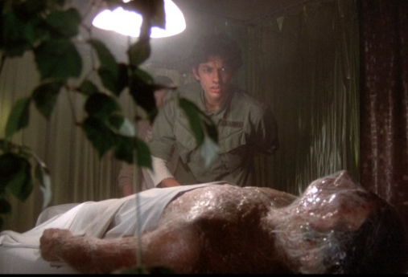

Terrified Students Convinced Their Teachers are Aliens
By Angel and Ariella
Terrified Students at Springfield Renaissance Have Convinced Each Other that their Teachers have been replaced by aliens, and are refusing to enter their classrooms, according Student Council president Hamilton Alexander.
“Many of my classmates are running up and down the halls all day,” said Alexander. “When I ask them why, they say that their teachers look the same, but are acting differently in little ways.”
How It All Started
It all began with a post on Snapchat, where a student took a photo of a teacher with the caption “Mr. Anderson is not Mr. Anderson!” After following up with a TikTok video, the post spread rapidly throughout the student body.
The author of the original post, whose name is protected, explained why he did it. “I didn’t really think there was anything wrong with Mr. A, to be honest”, he said. “I just wanted an excuse to get out of that class. My grades aren’t so good. I thought it would be fun to trick everyone and run out the door screaming. And if everyone else did it, I wouldn’t get in trouble myself.”
The plan succeeded. It was all the students were talking about the next day, after going home to check their feeds. Students who said they were too afraid to go to their classrooms stayed in the halls, running from any adults who tried to approach them and screaming.
Defeat of the Aliens
A few students decided to take matters into their own hands. Some began to set traps for the alien teachers, using shoelaces and drawstrings from their hoodies. Others tried to call 911 from school phones, which did not call out. Others fashioned makeshift weapons out of paper clips and rubber bands.
At this point, the author of the viral post came clean and took all responsibility. He turned himself in to the office, got on the intercom, and explained everything. He was also given permission to get on Snapchat and admit it was all a lie.
Not All Fun and Games
While the invasion of the teacher body-snatchers will be a fun memory for many students, this incident shows how quickly misinformation spreads among children. Learn more: How teenagers contribute to the spread of misinformation on social media and what to do about it (PBS Video). A major source of misinformation for middle school students is TikTok, with more than a third of US users are under 14 (NYTimes). Tweens get fed lies fast on that platform (Newsweek).